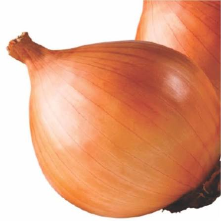

📖 Descrição
A Cebola Baia (Allium cepa) é uma das hortaliças mais cultivadas no Brasil. Muito utilizada na culinária, destaca-se pelo sabor marcante, aroma característico e elevado valor nutricional.
🌱 Cuidados
- Prefere solo fértil, leve e bem drenado.
- Necessita de boa luminosidade e sol pleno.
- Manter irrigação regular, evitando encharcamento.
- Realizar adubação orgânica periódica.
- Controlar plantas invasoras durante o cultivo.
🌎 Origem
Originária da Ásia Central, sendo cultivada há milhares de anos em diversas regiões do mundo.
🐝 Atrai quais polinizadores?
Quando floresce, atrai principalmente abelhas, importantes para a polinização e manutenção da biodiversidade.
🍽️ Parte comestível
Bulbo e folhas verdes.
💚 Benefícios para a saúde
- Rica em vitaminas C e do complexo B.
- Fonte de fibras e minerais.
- Possui ação antioxidante.
- Contribui para a saúde cardiovascular.
- Auxilia no fortalecimento do sistema imunológico.
🌼 Curiosidade
Ao cortar a cebola, são liberadas substâncias naturais que podem provocar lágrimas, um mecanismo de defesa da própria planta.
🌍 Importância para o meio ambiente
Seu cultivo favorece a diversidade agrícola, incentiva práticas sustentáveis e contribui para a produção de alimentos saudáveis na horta escolar.
🌾 Época de plantio
O plantio é mais indicado durante o outono e o inverno, em regiões de clima mais ameno.
📱 Acesse esta página pelo QR Code

Escaneie o QR Code para acessar esta página pelo celular.